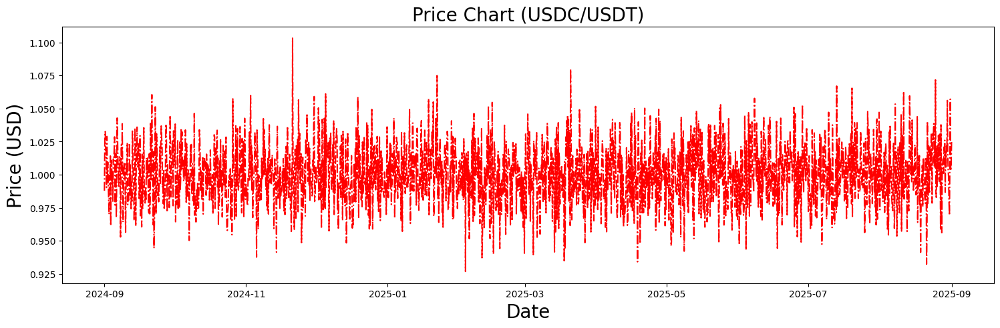
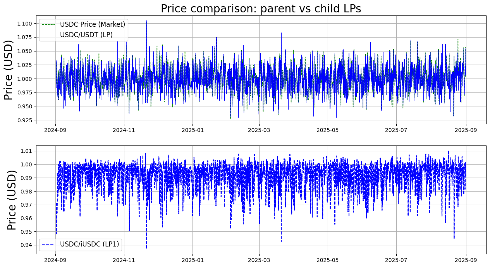
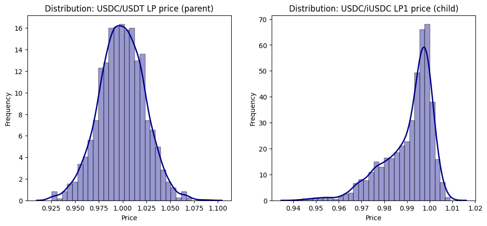
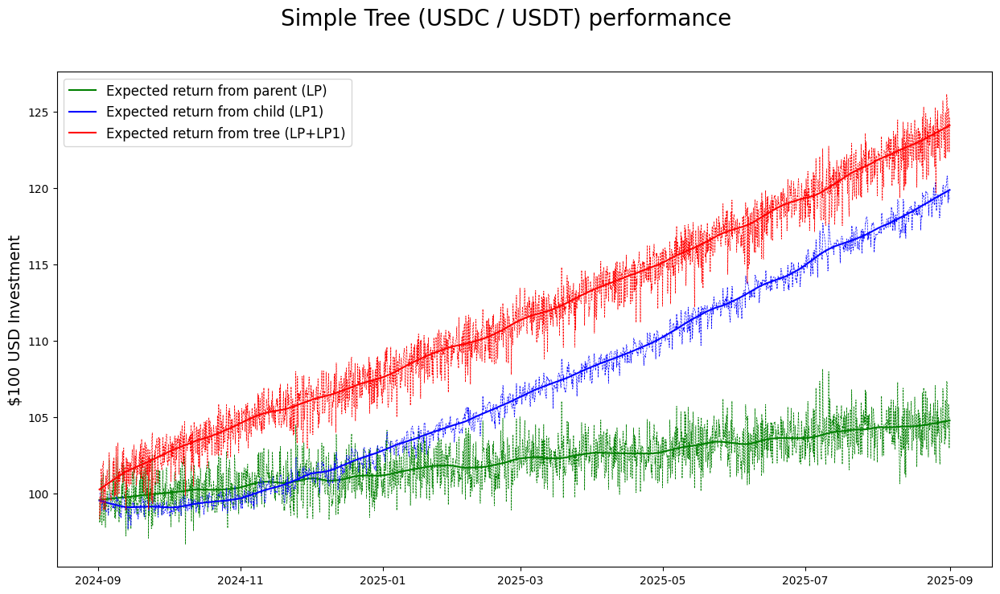
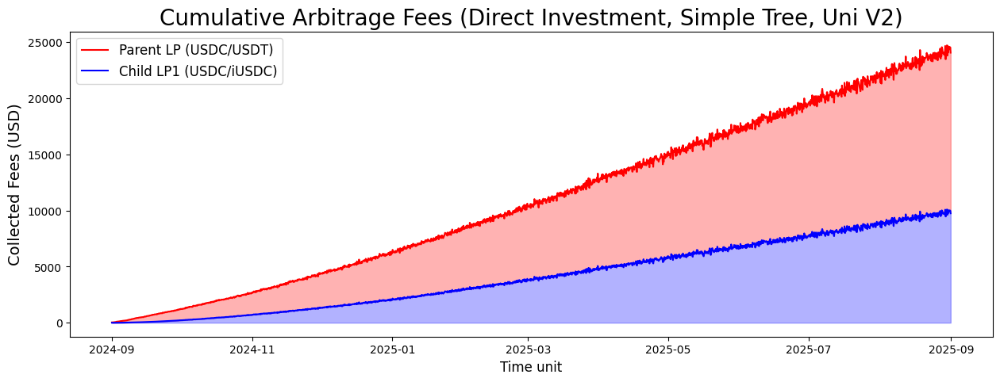

Simple Uni V2 Tree (Part 2)
Assumptions:
Uses Simple Tree
Uses stablecoins (ie, USDC and USDT) to control for impermanent loss
Includes state machine to handle finite supply of index tokens
LPs include:
USDC-USDT
USDC-iUSDC
Medium Article: Liquidity Tree Performance using Stablecoins: Part 2
To download notebook to this tutorial, see here
📘 Notable Classes
Class: 📘
defipy.math.model.BrownianModelPurpose: Geometric Brownian process.
Methods:
gen_gbms(mu: float, sigma: float, n_step: int, T: int = 1)Parameters:
mu: asset drift (float).sigma: asset volatility (int).n_step: number of steps. (int).T: time unit (optional) (int).
Class: 📘
defipy.math.model.TokenDeltaModelPurpose: Random sample of Gamma distribution representing an experimental token amount.
Methods:
delta(p: int = 1)Parameters:
p: buy/sell probability associated (buy = 1, sell = -1, optional) (int).
Class: 📘
defipy.analytics.simulate.CorrectReservesPurpose: Applies
SolveDeltasto Correct x/y reserve amounts so that price reflects desired input price; in the marjority of cases, the input price would be the most recent outside market price .Methods:
delta(price: float, lwr_tick: int = None, upr_tick: int = None)Parameters:
price: token price (int).lwr_tick: Lower tick of the position. (optional) (int).upr_tick: Upper tick of the position. (optional) (int).
[1]:
import os
import numpy as np
import pandas as pd
import datetime
import matplotlib.pyplot as plt
import scipy.stats as stats
import statsmodels.api as sm
import seaborn as sns
from defipy import *
Script params
[2]:
init_tkn_lp = 100000
tkn_delta_param = 1000
tkn_invest_amt = 100
tkn_nm = 'USDC'
itkn_nm = 'iUSDC'
usd_nm = 'USDT'
iusd_nm = 'iUSDT'
Simulate price data
[3]:
# *************************
# *** Simulation
# *************************
n_sim_runs = 2000
seconds_year = 31536000
shape = 2000
scale = 0.0005
p_arr = np.random.gamma(shape = shape, scale = scale, size = n_sim_runs)
n_runs = len(p_arr)-1
dt = datetime.timedelta(seconds=seconds_year/n_sim_runs)
dates = [datetime.datetime.strptime("2024-09-01", '%Y-%m-%d') + k*dt for k in range(n_sim_runs)]
x_val = np.arange(0,len(p_arr))
fig, (USD_ax) = plt.subplots(nrows=1, sharex=False, sharey=False, figsize=(18, 5))
USD_ax.plot(dates, p_arr, color = 'r',linestyle = 'dashdot', label='initial invest')
USD_ax.set_title(f'Price Chart ({tkn_nm}/{usd_nm})', fontsize=20)
USD_ax.set_ylabel('Price (USD)', size=20)
USD_ax.set_xlabel('Date', size=20)
[3]:
Text(0.5, 0, 'Date')

Initialization Params
[4]:
user_nm = 'user0'
tkn_amount = init_tkn_lp
dai_amount = p_arr[0]*tkn_amount
Initialize DEX Tree
[5]:
dai1 = ERC20(usd_nm, "0x111")
tkn1 = ERC20(tkn_nm, "0x09")
exchg_data = UniswapExchangeData(tkn0 = tkn1, tkn1 = dai1, symbol="LP", address="0x011")
TKN_amt = TokenDeltaModel(tkn_delta_param)
TKN_amt_arb = TokenDeltaModel(100)
lp1_state = MarkovState(stochastic = True)
iVault1 = IndexVault('iVault1', "0x7")
factory = UniswapFactory(f"{tkn_nm} pool factory", "0x2")
lp = factory.deploy(exchg_data)
Join().apply(lp, user_nm, tkn_amount, dai_amount)
tkn2 = ERC20(tkn_nm, "0x09")
itkn1 = IndexERC20(itkn_nm, "0x09", tkn1, lp)
exchg_data1 = UniswapExchangeData(tkn0 = tkn2, tkn1 = itkn1, symbol="LP1", address="0x012")
lp1 = factory.deploy(exchg_data1)
JoinTree().apply(lp1, user_nm, iVault1, 10000)
# Re-balance LP price after JoinTree
SwapDeposit().apply(lp, dai1, user_nm, lp.get_reserve(tkn1) - lp.get_reserve(dai1))
lp.summary()
lp1.summary()
Exchange USDC-USDT (LP)
Reserves: USDC = 110000.0, USDT = 110000.0
Liquidity: 109983.66359843774
Exchange USDC-iUSDC (LP1)
Reserves: USDC = 9972.071706380653, iUSDC = 4843.944835233285
Liquidity: 6950.119800312692
Take an investment position
[6]:
tkn_invest = 100
invested_user_nm = 'invested_user'
SwapIndexMint(iVault1, opposing = False).apply(lp, tkn1, invested_user_nm, tkn_invest)
mint_itkn1_deposit = lp1.convert_to_human(iVault1.index_tokens[itkn_nm]['last_lp_deposit'])
lp1_state.next_state(mint_itkn1_deposit)
SwapDeposit().apply(lp1, itkn1, invested_user_nm, mint_itkn1_deposit)
lp.summary()
lp1.summary()
lp_invest_track = lp.get_liquidity_from_provider(invested_user_nm)
lp1_invest_track = lp1.get_liquidity_from_provider(invested_user_nm)
# Redeem from parent
tkn_redeem_parent = LPQuote(False).get_amount_from_lp(lp, tkn1, lp_invest_track)
# Redeem from tree (child + parent)
itkn_redeem_child = LPQuote(False).get_amount_from_lp(lp1, itkn1, lp1_invest_track)
tkn_redeem_tree = LPQuote(False).get_amount_from_lp(lp, tkn1, itkn_redeem_child)
print(f'{tkn_redeem_parent:.3f} USDC redeemed from {lp_invest_track:.3f} LP tokens if {tkn_invest:.1f} invested USDC immediately pulled from parent')
print(f'{tkn_redeem_tree:.3f} USDC redeemed from {lp1_invest_track:.3f} LP1 tokens if {tkn_invest:.1f} invested USDC immediately pulled from tree')
Exchange USDC-USDT (LP)
Reserves: USDC = 110100.0, USDT = 110000.0
Liquidity: 110033.56973158607
Exchange USDC-iUSDC (LP1)
Reserves: USDC = 9972.071706380653, iUSDC = 4893.850968381618
Liquidity: 6985.777211181214
99.700 USDC redeemed from 49.906 LP tokens if 100.0 invested USDC immediately pulled from parent
99.403 USDC redeemed from 35.657 LP1 tokens if 100.0 invested USDC immediately pulled from tree
Simulate trading
[7]:
arb = CorrectReserves(lp, x0 = 1)
arb1 = Arbitrage(lp1, lp1_state)
TKN_amt = TokenDeltaModel(tkn_delta_param)
lp_direct_invest_arr = []; lp1_direct_invest_arr = []; lp1_tree_invest_arr = [];
pTKN_DAI_arr = []; pTKN_iTKN_arr = []
fee_lp_arr = []; fee_lp1_arr = [];
for k in range(n_sim_runs):
#if(k % 100 == 0 and k != 0): print(f'Processing event {k}')
# *****************************
# ***** Parent Arbitrage ******
# *****************************
arb.apply(p_arr[k])
# *****************************
# ***** Child Arbitrage ******
# *****************************
amt_arb1 = TKN_amt_arb.delta()
arb1.apply(1, user_nm, amt_arb1)
arb1.update_state(itkn1)
mint_tkn1_amt = 0.5*TKN_amt.delta()
SwapIndexMint(iVault1, opposing = False).apply(lp, tkn1, user_nm, mint_tkn1_amt)
mint_itkn1_deposit = lp1.convert_to_human(iVault1.index_tokens[itkn_nm]['last_lp_deposit'])
lp1_state.next_state(mint_itkn1_deposit)
vault_lp1_amt = lp1_state.get_current_state('dVault')
burned_itkn1_amt = lp1_state.get_current_state('dBurned')
## WithdrawSwap burned token from parent LP
if(burned_itkn1_amt > 0):
total_tkn_w_swap = LPQuote(False).get_amount_from_lp(lp, tkn1, burned_itkn1_amt)
amt_out = RemoveLiquidity().apply(lp, tkn1, user_nm, total_tkn_w_swap/2)
## Balance LP1: TKN/iTKN
if(vault_lp1_amt > 0):
# A portion of aquired token is coming from newly minted, while the remainder is coming from held
amt_tkn = LPQuote(False).get_amount_from_lp(lp, tkn1, vault_lp1_amt)
price_tkn = amt_tkn/vault_lp1_amt
AddLiquidity(price_tkn).apply(lp1, itkn1, user_nm, vault_lp1_amt)
elif(vault_lp1_amt < 0):
# A portion of removed token is getting held, while the remainder is getting burned
RemoveLiquidity().apply(lp1, itkn1, user_nm, abs(vault_lp1_amt))
# *****************************
# ***** Random Swapping ******
# *****************************
Swap().apply(lp, tkn1, user_nm, TKN_amt.delta())
Swap().apply(lp, dai1, user_nm, TKN_amt.delta())
# conservatively assume 10% of tokens held outside vault are traded
held_tokens = lp1_state.get_current_state('Held')
if(held_tokens > 0):
tradable_itkn1_amt = 0.1*held_tokens
Swap().apply(lp1, tkn2, user_nm, LPQuote(False).get_amount_from_lp(lp, tkn1, tradable_itkn1_amt))
Swap().apply(lp1, itkn1, user_nm, tradable_itkn1_amt)
# *****************************
# ******* Data Capture ********
# *****************************
# price
pTKN_DAI_arr.append(LPQuote().get_price(lp, tkn1))
pTKN_iTKN_arr.append(LPQuote().get_price(lp1, tkn1))
# investment performance
tkn_redeem_parent = LPQuote(False).get_amount_from_lp(lp, tkn1, lp_invest_track)
itkn_redeem_child = LPQuote(False).get_amount_from_lp(lp1, itkn1, lp1_invest_track)
tkn_redeem_tree = LPQuote(False).get_amount_from_lp(lp, tkn1, itkn_redeem_child)
lp_direct_invest_arr.append(tkn_redeem_parent)
lp1_direct_invest_arr.append(LPQuote(True).get_amount_from_lp(lp1, itkn1, lp1_invest_track))
lp1_tree_invest_arr.append(tkn_redeem_tree)
# DEX Fees
fee_lp_arr.append(TreeAmountQuote().get_tot_y(lp, lp.get_fee(tkn1), lp.get_fee(dai1)))
fee_lp1_arr.append(TreeAmountQuote().get_tot_y(lp1, lp1.get_fee(tkn2), lp1.get_fee(itkn1)))
lp.summary()
lp1.summary()
# Redeem from parent
tkn_redeem_parent = LPQuote(False).get_amount_from_lp(lp, tkn1, lp_invest_track)
# Redeem from tree (child + parent)
itkn_redeem_child = LPQuote(False).get_amount_from_lp(lp1, itkn1, lp1_invest_track)
tkn_redeem_tree = LPQuote(False).get_amount_from_lp(lp, tkn1, itkn_redeem_child)
print(f'{tkn_redeem_parent:.3f} USDC redeemed from {lp_invest_track:.3f} LP tokens if {tkn_invest:.1f} invested USDC pulled from parent (lp)')
print(f'{tkn_redeem_tree:.3f} USDC redeemed from {lp1_invest_track:.3f} LP1 tokens if {tkn_invest:.1f} invested USDC pulled from tree (lp + lp1)')
Exchange USDC-USDT (LP)
Reserves: USDC = 168992.23336796605, USDT = 173213.2595403727
Liquidity: 162988.06243043763
Exchange USDC-iUSDC (LP1)
Reserves: USDC = 28358.764821080924, iUSDC = 14178.452311854142
Liquidity: 16888.99236775931
103.318 USDC redeemed from 49.906 LP tokens if 100.0 invested USDC pulled from parent (lp)
123.625 USDC redeemed from 35.657 LP1 tokens if 100.0 invested USDC pulled from tree (lp + lp1)
[8]:
lp1_state.check_states()
lp1_state.inspect_states(tail = True, num_states = 5)
Amount of tokens retained across states: PASS
[8]:
| Mint | Held | Vault | Burned | dHeld | dVault | dBurned | |
|---|---|---|---|---|---|---|---|
| 1996 | 98.510225 | 5115.477353 | 15320.132698 | 79706.098972 | 865.231166 | -903.574374 | 39.660717 |
| 1997 | 133.022023 | 4190.558625 | 16318.433501 | 79731.227122 | -924.918728 | 998.300803 | 25.128150 |
| 1998 | 23.621715 | 5269.652077 | 15329.101526 | 79774.487668 | 1079.093452 | -989.331975 | 43.260546 |
| 1999 | 33.379226 | 3996.942272 | 16601.570128 | 79798.350586 | -1272.709805 | 1272.468602 | 23.862918 |
| 2000 | 63.680746 | 5018.481752 | 15445.601470 | 79966.158991 | 1021.539480 | -1155.968659 | 167.808404 |
[9]:
fig, (TKN_ax, DAI_ax) = plt.subplots(nrows=2, sharex=False, sharey=False, figsize=(15, 8))
strt_pt = 5
TKN_ax.plot(dates[strt_pt:], p_arr[strt_pt:], color = 'g',linestyle = 'dashed', linewidth=1, label=f'{tkn_nm} Price (Market)')
TKN_ax.plot(dates[strt_pt:], pTKN_DAI_arr[strt_pt:], color = 'b',linestyle = '-', linewidth=0.7, label=f'{tkn_nm}/{usd_nm} (LP)')
TKN_ax.set_title('Price comparison: parent vs child LPs', fontsize=20)
TKN_ax.set_ylabel('Price (USD)', size=20)
TKN_ax.legend(fontsize=12)
TKN_ax.grid()
DAI_ax.plot(dates[strt_pt:], pTKN_iTKN_arr[strt_pt:], color = 'b',linestyle = 'dashed', label=f'{tkn_nm}/{itkn_nm} (LP1)')
DAI_ax.set_ylabel('prices', size=20)
DAI_ax.set_ylabel('Price (USD)', size=20)
DAI_ax.legend(fontsize=12)
DAI_ax.grid()

[10]:
y1_samp = stats.gamma.rvs(a=2000, scale=0.0005, size=10000)
fig, ax = plt.subplots(1, 2, figsize=(12,5))
sns.distplot(pTKN_DAI_arr, hist=True, kde=True, bins=int(30), color = 'darkblue',
hist_kws={'edgecolor':'black'}, kde_kws={'linewidth': 2}, ax=ax[0])
sns.distplot(pTKN_iTKN_arr, hist=True, kde=True, bins=int(30), color = 'darkblue',
hist_kws={'edgecolor':'black'}, kde_kws={'linewidth': 2}, ax=ax[1])
ax[0].set_title(f'Distribution: {tkn_nm}/{usd_nm} LP price (parent)')
ax[0].set_xlabel('Price')
ax[0].set_ylabel('Frequency')
ax[1].set_title(f'Distribution: {tkn_nm}/{itkn_nm} LP1 price (child)')
ax[1].set_xlabel('Price')
ax[1].set_ylabel('Frequency')
[10]:
Text(0, 0.5, 'Frequency')

[11]:
lowess = sm.nonparametric.lowess
x = range(0,n_sim_runs)
res = lowess(lp_direct_invest_arr, x, frac=1/15); sm_lp_direct = res[:,1]
res = lowess(lp1_direct_invest_arr, x, frac=1/15); sm_lp1_direct = res[:,1]
res = lowess(lp1_tree_invest_arr, x, frac=1/15); sm_lp1_tree= res[:,1]
strt_ind = 3
fig, (p_ax) = plt.subplots(nrows=1, sharex=True, sharey=False, figsize=(15, 8))
fig.suptitle('Simple Tree (USDC / USDT) performance ', fontsize=20)
p_ax.plot(dates[strt_ind:], lp_direct_invest_arr[strt_ind:], linestyle='dashed', linewidth=0.5, color = 'g')
p_ax.plot(dates[strt_ind:], sm_lp_direct[strt_ind:], color = 'g', label = 'Expected return from parent (LP)')
p_ax.plot(dates[strt_ind:], lp1_direct_invest_arr[strt_ind:], linestyle='dashed', linewidth=0.5, color = 'b')
p_ax.plot(dates[strt_ind:], sm_lp1_direct[strt_ind:], color = 'b', label = 'Expected return from child (LP1)')
p_ax.plot(dates[strt_ind:], lp1_tree_invest_arr[strt_ind:], linestyle='dashed', linewidth=0.5, color = 'r')
p_ax.plot(dates[strt_ind:], sm_lp1_tree[strt_ind:], color = 'r', label = 'Expected return from tree (LP+LP1)')
p_ax.legend( fontsize=12)
p_ax.set_ylabel("$100 USD Investment", fontsize=14)
[11]:
Text(0, 0.5, '$100 USD Investment')

[12]:
print(f'{tkn_invest:.3f} TKN before is worth {sm_lp_direct[-1]:.3f} TKN after direct investment into parent (lp)')
print(f'{tkn_invest:.3f} TKN before is worth {sm_lp1_direct[-1]:.3f} TKN after direct investment into child (lp1)')
print(f'{tkn_invest:.3f} TKN before is worth {sm_lp1_tree[-1]:.3f} TKN after investment into simple tree (lp + lp1)')
100.000 TKN before is worth 103.980 TKN after direct investment into parent (lp)
100.000 TKN before is worth 119.578 TKN after direct investment into child (lp1)
100.000 TKN before is worth 124.271 TKN after investment into simple tree (lp + lp1)
[13]:
t = np.arange(0,len(fee_lp_arr))
fee_lpB = np.array(fee_lp1_arr)
fee_lpA = fee_lpB+np.array(fee_lp_arr)
fig = plt.figure(figsize=(15, 5))
plt.plot(dates, fee_lpA, color = 'r', label = f'Parent LP ({tkn_nm}/{usd_nm})')
plt.fill_between(dates, fee_lpB, fee_lpA, alpha=0.3, color='r')
plt.plot(dates, fee_lpB, color = 'b', label = f'Child LP1 ({tkn_nm}/{itkn_nm})')
plt.fill_between(dates, np.repeat(0,len(fee_lp_arr)), fee_lpB, alpha=0.3, color='b')
plt.title('Cumulative Arbitrage Fees (Direct Investment, Simple Tree, Uni V2)', fontsize = 20)
plt.xlabel("Time unit", fontsize=12)
plt.ylabel("Collected Fees (USD)", fontsize=14)
plt.legend(fontsize=12)
[13]:
<matplotlib.legend.Legend at 0x17fe16a10>
